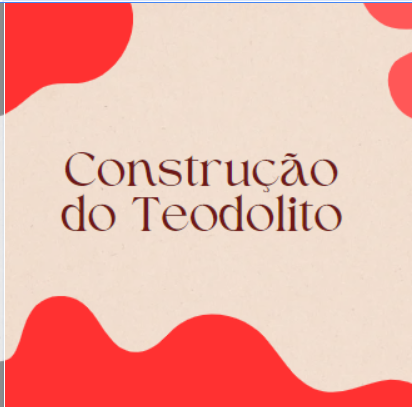

Matemática:

Em nossa aula de matemática, construímos um teodolito, usando apenas materiais simples. Este instrumento é fundamental para medições angulares, tanto na topografia quanto na engenharia. Após a construção, utilizamos nosso teodolito para realizar medições reais em nosso entorno. Medimos a altura de árvores e postes, para conseguir calcular.